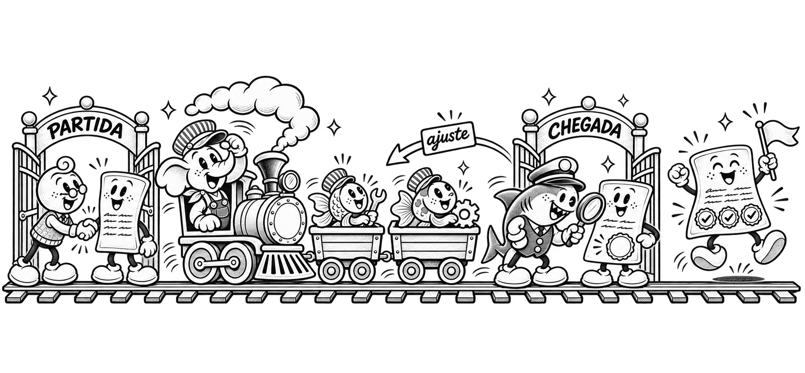
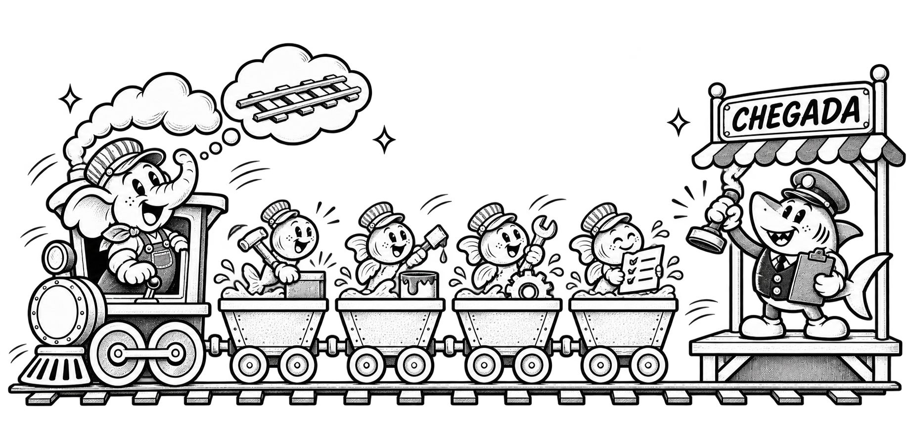
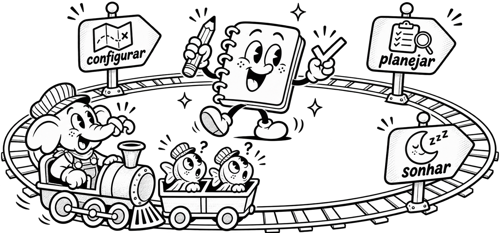

Cada tarefa chega ao destino com seus carimbos.
Um harness por projeto para Claude Code e Codex. Você define o destino e os portões; o elefante conduz, os peixinhos executam cada um no seu vagão, e o tubarão confere a entrega.

- Entradarequisitos e plano
- Vagõesum peixinho por tarefa
- Trilhosguardrails e memória
- Conferênciao tubarão valida
- Destinopassaporte completo
npx @fullchico/harness@latest installRode na pasta do projeto. O instalador oferece Claude, Codex ou ambos; ambos é o padrão. Depois, comece por /tr:process-plan.
A divisão
O core organiza o percurso e confere a prova. As ferramentas do projeto executam os testes e análises definidos em cada portão.
Oito conceitos, nesta ordem
Portão é uma etapa obrigatória; carimbo é a prova de que ela passou. O plugin não escolhe o seu lint nem o seu teste: exige que a etapa aconteça.
Harness
O conjunto do projeto: plugins, portões e configuração.
Status: disponível.
Planejamento
O
trorquestra as skills de Matt Pocock:grillingedomain-modelingentrevistam,to-speceto-ticketsescrevem a spec e os tickets. O dono aceita o critério escrito (gates --accept), e esse aceite autoriza a execução até a entrega. Mudou o critério, o aceite volta para ele.Status: disponível em
/tr:configuree/tr:process-plan.Paralelismo com grafo
Tickets independentes entram na fronteira juntos; o hook só libera os que não têm bloqueadores pendentes.
Status: grafo e trava disponíveis no
tr.Loops
Se o fiscal reprovar, o orquestrador devolve a tarefa ao executor, corrige e pede nova validação. Cada portão final tem um limite configurável de tentativas automáticas.
Status: disponível; 3 reprovações por padrão, intervenção na quarta.
Guardrails
Hooks em Claude Code e Codex conferem as chamadas cobertas e apontam etapas pendentes antes da entrega. Quem planeja não executa: com tickets abertos, a sessão principal e o orquestrador não escrevem código. Escrita indireta pelo terminal (
python -c, scripts) é conferida pelo efeito. Perfilfluxosem sandbox nativo, com Docker disponível; perfilisoladocominstall --sandbox.Status: disponível como controle de fluxo.
Portões
Na entrada exigem os requisitos; no fim validam a entrega. Portões de meio podem exigir evidência de um ticket específico. Você os configura em
.claude/harness.json.Status: disponível.
Validações
O que dá o carimbo: um comando que passa, o veredito de um agente ou um artefato validado. O carimbo é um certificado no próprio documento da demanda, assinado pelo commit de quem validou: vale para o código e o critério daquele momento, em qualquer máquina.
Status: disponível.
Memória organizada
Mapa do código e notas ancoradas, por projeto, carregados no começo de cada sessão (plugin
memory). Ela roda sozinha: o configure cria o mapa, cada demanda o confere e cada entrega termina num sonho que lê as sessões e grava o que elas ensinaram.Status: disponível.
Entrada, percurso e conferência
O portão de entrada confirma os requisitos. Cada tarefa percorre seu trilho, com validações próprias no meio quando necessárias. No destino, fiscais independentes conferem os carimbos exigidos para aquela entrega.

- Claudeentrevista
- Claudeexecuta o vagão
- Codexrevisa
- Entregapassaporte conferido
A entrevista decide os carimbos exigidos. Depois do critério aceito, o orquestrador segue até a entrega; só pede intervenção quando um portão final exigir aprovação humana ou exceder seu limite.
O carimbo é um certificado no documento
Como a assinatura de um especialista num documento revisado: o certificado vai no apêndice da spec da demanda e é assinado pelo commit de quem validou. O dono assina o critério; cada revisor assina o próprio veredito; quem executou não assina nada.
O elefante conduz, os peixinhos executam, o tubarão valida
O elefante é o modelo maior: pensa, conversa com você, fecha a definição, conduz o trem e guarda o que foi entregue. Os peixinhos são os modelos menores: cada um no seu vagão, executa o seu ticket e esquece. O tubarão valida na chegada: confere cada vagão contra o critério aceito e carimba.

tmux ls vira o painel da demanda.Modelos por demanda
Quando a definição fecha, você escolhe o modelo do orquestrador, o dos executores e o dos revisores para aquela demanda. Vários modelos de executor se revezam. O nome do modelo é um apelido para a versão mais nova.
tr-harness orchestrate --agent claude --model opus --executors claude:haiku,codex:terra --reviewers claude:sonnet --terminalsO peixe só leva o que é do projeto
Skills, instruções, hooks e conectores registrados no projeto chegam a todo peixe; o ambiente do seu usuário não entra. O aviso de que um peixe terminou é um relato em arquivo, cobrado pelo hook, e cada terminal é gravado desde a abertura.
O trilho é limite, não procedimento
A garantia mora nos portões: os critérios são levantados na partida e validados na chegada. No caminho, o peixe é livre dentro do ticket.
Cada peixinho no seu trilho
Tarefas independentes correm em trilhos paralelos, cada peixinho no seu worktree e no seu terminal. O elefante troca os trilhos e vê os três de uma vez; todos chegam ao mesmo portão, onde o tubarão confere. Cada passaporte exige apenas os carimbos que fazem sentido para aquela carga.

Conferência antes de declarar a entrega
O executor produz o trabalho; outro agente examina a evidência. Se faltar um carimbo ou a revisão reprovar, a tarefa volta para correção e passa de novo pelo portão. A aprovação é automática por padrão. O projeto pode exigir uma assinatura humana para um portão final.
fullchico-harness models configureRegistre os modelos padrão do projeto. A escolha de cada demanda (orquestrador, executores e revisores) vai no comando de partida e não muda o registro.
O elefante nunca esquece
Ninguém precisa lembrar de um comando. O configure cria o mapa do código, cada demanda o confere antes da entrevista, e cada entrega termina num sonho: um extrator isolado lê as sessões inteiras, com o que cada peixe escreveu, e só fica a nota que o código confirma.

Plugins
Cada um é independente e se liga só no projeto, em Claude Code ou Codex.
tr- Disponível. Registro, portões de entrada, meio e fim, validadores em subagente limpo (
/tr:quality-check,/tr:bugs-hunt,/tr:scope-check), passaporte por demanda, modelos por papel e/tr:process-plan. memory- Disponível. Mapa do código, notas ancoradas e busca por grafo local, compartilhados entre Claude e Codex sem versionar o índice gerado.
- Orquestração
- Disponível no
tr. O orquestrador, num terminal próprio, coordena tickets liberados pelo grafo, executores e fiscais independentes. Modelos Claude e Codex podem ser escolhidos por papel e por portão; execuções longas rodam commodels run --detache são consultadas commodels wait. - Segurança
- Configurável pelo projeto. Registre um portão final com comando ou fiscal próprio se a entrega exigir essa revisão.
O que é core. O que entra como ferramenta.
O harness conecta módulos comprovados por processo. O projeto escolhe comandos, habilidades e portões sem prender a entrega a um único modelo ou stack.
Core do FullChico
- Orquestração: entrevista, plano, tickets, dependências e modelos por papel.
- Guardrails: hooks que protegem o registro e impedem pular etapas.
- Memória: mapa, notas conferidas com o código e índice local.
- Validação: portões de entrada, meio e fim; passaporte e certificados no documento da demanda, assinados por commit.
Ferramentas integradas
- Matt Pocock: skills de entrevista, modelagem e práticas de implementação; o
trorquestragrilling,domain-modeling,to-spec,to-tickets,tddecode-review, sem cópia adaptada. O Matt produz e julga; otrcertifica. - Ponytail: orientação para mudanças pequenas e revisão.
- Graphify: motor AST opcional da memória; a skill acompanha o pacote.
- rtk: compressão da saída de comandos, obrigatória no Claude Code e no Codex.
- Git: base local para ancorar estado e memória; remoto e PR só se o projeto exigir.
Instalar
Tudo
A máquina precisa de Git, Node 18+, Python 3, tmux e rtk; o instalador cobra os dois últimos. O install pergunta se o projeto usa Claude Code, Codex ou ambos; a opção padrão é ambos. Ele liga os plugins tr e memory no projeto e instala as skills de Ponytail e Matt Pocock para o ambiente escolhido.
Instale
npx @fullchico/harness@latest installEntreviste e configure
Na sessão, use
/tr:configure. O diagnóstico mostra candidatos; a entrevistagrillingrefina quais portões o projeto realmente quer, seus critérios e as tentativas de correção.Aceite o critério
Cada demanda começa por
/tr:process-plan. Depois da entrevista, você aceita a spec e os tickets escritos uma vez; o orquestrador segue sozinho até os portões finais.Abra a sessão
Use
claudeoucodexnormalmente.
Cada clone precisa do install. Ligar o plugin no settings não o baixa (limite da plataforma). Quem clona roda install uma vez.
Registro de portões
Fica em .claude/harness.json, chave gates. O instalador não cadastra portões automaticamente. O projeto escolhe início, meio e fim; os portões finais podem limitar correções automáticas e pedir aprovação humana.
{
"code": ["apps", "packages"],
"gates": {
"process": {
"stage": "start",
"signs": "artifact",
"artifact": "docs/specs/*/spec.md",
"description": "spec da mudança, saída da entrevista"
},
"quality": {
"stage": "end",
"signs": "command",
"command": "pnpm lint && pnpm test",
"attempts": 5,
"approval": "auto"
},
"bugs": {
"stage": "end",
"signs": "agent",
"agent": "tr:bug-hunter"
},
"scope": {
"stage": "end",
"signs": "agent",
"agent": "tr:scope-checker"
},
"segredos": {
"stage": "end",
"signs": "command",
"command": "gitleaks detect"
}
}
}
- O que o
gatemostra - Sem argumento, lista cada portão com
okoufalta, o momento, o modo de assinar e o que fazer. Com um nome, roda a verificação e termina empassououFALHOU. - Tentativas e aprovação
attemptsaceita qualquer inteiro não negativo; o padrão é 3, com intervenção na reprovação seguinte.approval: autoé o padrão. Comhuman, o dono usafullchico-harness gates --approve <name>depois que o fiscal validar o estado.code- As pastas que são código do app. Sem a chave, é tudo menos
docs/,.claude/,.mde o ignorado pelo git. - O registro é do dono
- O agente não decide os critérios depois do plano aprovado. O CLI recusa gravar
.claude/harness.jsonde dentro de uma sessão Claude; se o projeto já usa sandbox, também adiciona o arquivo aodenyWrite.
Limites honestos
- Validação na entrega
- Os hooks valem nas sessões de Claude Code ou Codex em que estiverem ativos. A checagem explícita
fullchico-harness delivertambém funciona no terminal. O instalador inicia Git quando necessário. - Sandbox opcional
- O perfil padrão (
fluxo) não liga o sandbox nativo, para o Docker do projeto funcionar. Os hooks e a checagem explícita aplicam o fluxo nas sessões cobertas e detectam escrita indireta depois que ela acontece; sem isolamento, não são uma barreira contra adulteração por processos com acesso ao usuário. O perfilisolado(install --sandbox) protege o registro e o estado. - Codex
- Hooks de projeto só rodam depois que você confia neles; o
models runrecusa uma execução Codex em que eles não rodaram. Na versão 0.171, a mensagem do disparo de subagente chega cifrada ao hook: a fronteira por ticket e o pedido canônico do fiscal não se aplicam a esses disparos. - O certificado é prova de etapa
- Ele prova que a etapa aconteceu contra o critério aceito, não que o revisor foi bom. O agente e os hooks rodam como o mesmo usuário: a garantia vem do guard, que barra o agente no apêndice, do Git, que mostra tudo no diff, e dos hashes, que qualquer um recalcula.